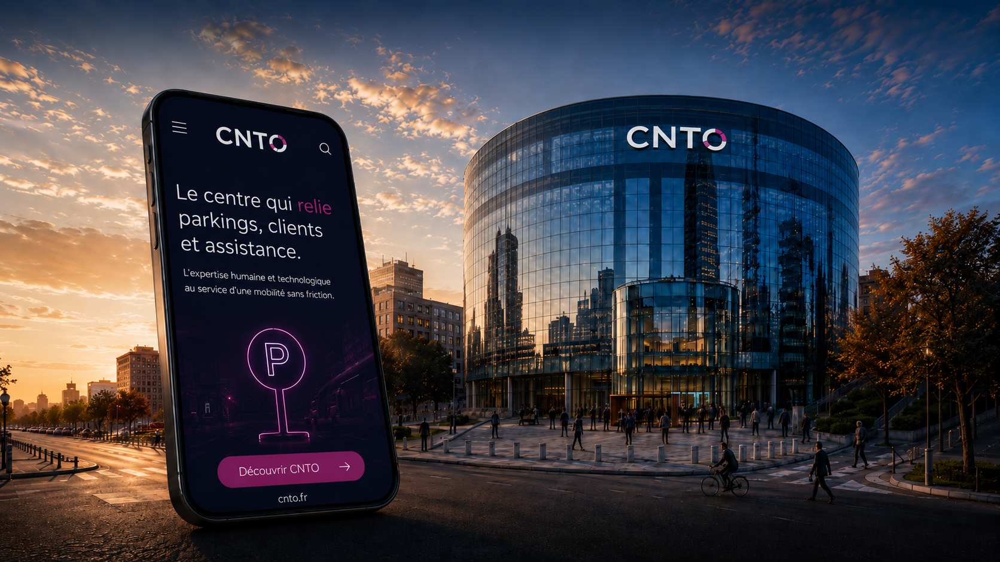

01
Assistance 24/7
Une présence continue, jour et nuit, pour accompagner les clients quand ils en ont besoin. Pas de plage horaire. Pas de pause. Toujours quelqu'un au bout du fil.

L'expertise humaine et technologique
au service d'une mobilité sans friction.
Quand un client appelle, ce n'est jamais « juste un appel ». C'est une barrière bloquée, une alarme, un doute, une urgence. Le CNTO est là pour répondre vite, comprendre juste, et remettre le mouvement en route.
Le CNTO accompagne les clients à distance, 24h/24 et 7j/7, sur l'ensemble du parcours parking. Entrée, sortie, paiement, abonnement, assistance, alarmes, incidents techniques : on est le lien entre le terrain, les équipements et les clients.
Pas juste pour décrocher. Pour résoudre. Chaque appel est une situation réelle à analyser, guider, débloquer. Une mission qui demande de l'écoute, du sang-froid et une parfaite connaissance du terrain.
Parce qu'un parking, ce n'est pas toujours fluide. Parfois la barrière ne s'ouvre pas. Parfois le ticket ne passe pas. Parfois le client ne comprend pas ce qui bloque. Parfois il est seul, pressé, agacé, inquiet. Le CNTO intervient à distance pour analyser, guider, débloquer et rassurer. Avec des outils. Avec de l'expérience. Et surtout avec des humains qui savent écouter.
Une présence continue, jour et nuit, pour accompagner les clients quand ils en ont besoin. Pas de plage horaire. Pas de pause. Toujours quelqu'un au bout du fil.
Chaque seconde compte quand un client est bloqué en entrée, en sortie ou face à une borne. Décrocher vite. Comprendre vite. Agir vite.
Nos équipes connaissent les situations réelles : les alarmes, les incidents, les appels sous tension, les urgences qui ne préviennent jamais. Ça ne s'apprend pas dans un manuel.
Nos outils ne remplacent pas l'humain. Ils l'aident à aller plus vite, plus loin, plus juste. Une techno au service de la décision, pas l'inverse.
La mobilité change. Les villes changent. Les usages changent. Mais une chose ne change pas : quand un client est bloqué, il veut quelqu'un. Maintenant.
Le CNTO, c'est cette réponse. Un centre capable de connecter les données, les équipements, les sites et les équipes terrain. Pas pour faire joli sur une slide. Pour améliorer concrètement l'expérience client.
Des appels. Des alarmes. Des accès à débloquer. Des clients à rassurer. Des sites à accompagner. Le CNTO est au cœur d'un réseau vivant, où chaque intervention compte. Parce qu'une bonne assistance, ça ne se voit pas toujours. Mais quand elle n'est pas là, tout le monde la remarque.
Un client qui repart rassuré. Une situation qui ne dégénère pas. Un site qui reste opérationnel. Une image de marque qui tient debout.
Le client ne voit pas toujours le système. Il ne voit pas les outils, les procédures, les équipes derrière. Mais il ressent tout de suite quand ça fonctionne.
Un appel pris vite. Une réponse claire. Une solution trouvée. Une tension qui redescend. C'est là que le CNTO intervient. Dans l'instant. Dans le réel. Dans les moments où l'expérience client se joue vraiment.